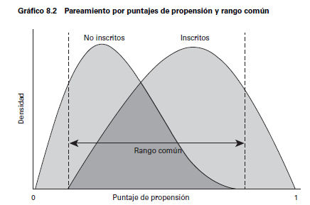
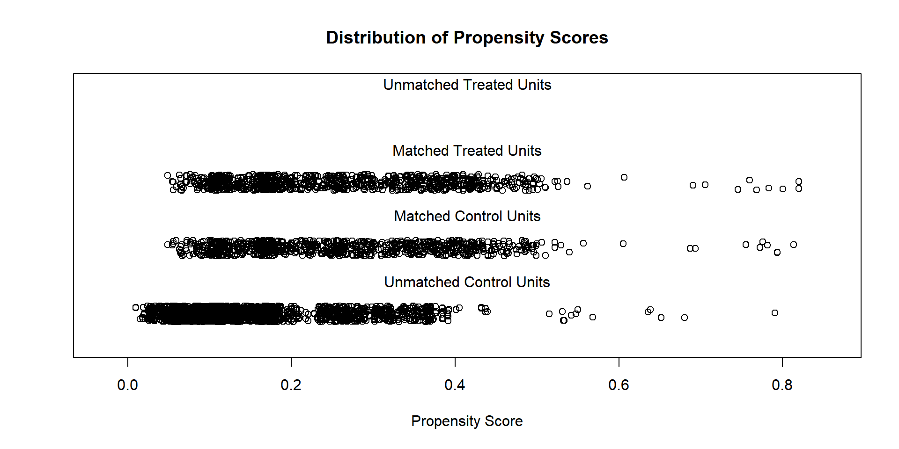
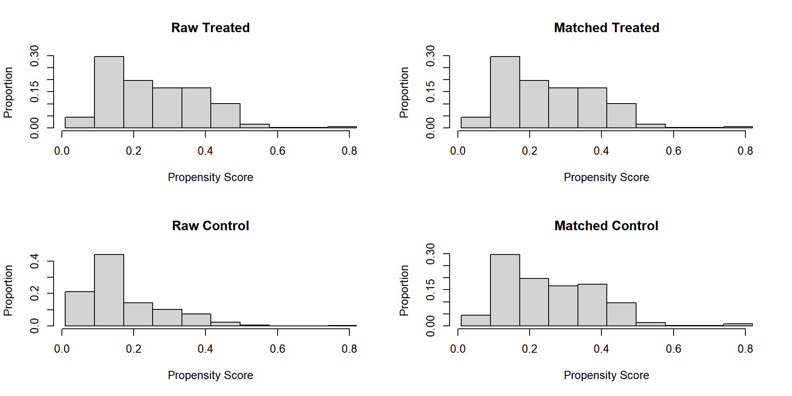

Sesión 18. Métodos de matching en R
Inferencia Causal
Irvin Rojas
rojasirvin.com
Centro de Investigación y Docencia Económicas División de Economía
Agenda
Estudiaremos los algoritmos de matching más usados
Veremos una aplicación del PSM en R
El propensity score
El supuesto de independencia condicional implica que, condicional en una serie de características \(X_i\), la asignación del tratamiento es como si hubiera sido aleatoria
El teorema del PS (Rosenbaum y Rubin, 1983) nos permite usar el propensity score (PS) en vez de las características \(X_i\)
\[ Y(0), Y(1) \perp D|P(X) \]
\(P(X)=P(D=1|X)\) es el PS y se interpreta como la probabilidad de ser tratado dado un conjunto de covariables \(X\)
Los algoritmos de matching buscan construir el contrafactual para el grupo tratado basándose en alguna noción de distancia con respecto al PS
Algoritmos de matching más populares
Vecino más cercano
Caliper
Estratificación
Vecino más cercano
A cada individuo del grupo tratado se le asigna uno del grupo de comparación en términos del PS
Puede hacerse con remplazo o sin remplazo
Puede emplearse también sobremuestreo (oversampling), es decir, asignar más de un individuo del grupo de comparación
Por ejemplo NN 5 significa que a cada individuo tratado se le asignan los cinco individuos del grupo no tratado con los PS estimados más cercanos
Vecino más cercano
| Tratados | \(\hat{p}\) |
|---|---|
| a | 0.031 |
| b | 0.042 |
| c | 0.07 |
| \(\vdots\) | \(\vdots\) |
| No tratados | \(\hat{p}\) |
|---|---|
| A | 0.034 |
| B | 0.068 |
| C | 0.21 |
| \(\vdots\) | \(\vdots\) |
Con vecino más cercano, el individuo \(a\) tratado estaría emparejado con el \(A\) no tratado
Si el emparejamiento es con reemplazo, \(A\) podría ser usado otra vez y \(b\) también sería emparejado con \(A\)
Pero si el emparejamiento es sin reemplazo, \(A\) ya no puede ser usado y a \(b\) se le emparejaría con \(B\)
Cuando hacemos el pareamiento sin reemplazo, debemos tener una muestra lo suficientemente grande
El pareamiento sin reemplazo depende del orden en que se realice el procedimiento
Caliper y radio
El método de vecino más cercano puede generar malos emparejamientos si el vecino más cercano está muy lejos en términos del PS
Especificar un caliper consiste en definir una vecindad aceptable de matching (el caliper) y elegir solo el vecino más cercano dentro del caliper
Con las funciones de R que usaremos más adelante, el radio consiste en definir cuántos individuos deberán ser apareados dado que están dentro del caliper
Caliper
| Tratados | \(\hat{p}\) |
|---|---|
| a | 0.031 |
| b | 0.042 |
| c | 0.07 |
| d | 0.11 |
| \(\vdots\) | \(\vdots\) |
| No tratados | \(\hat{p}\) |
|---|---|
| A | 0.034 |
| B | 0.068 |
| C | 0.21 |
| D | 0.40 |
| \(\vdots\) | \(\vdots\) |
El primer paso es fijar el caliper, por ejemplo, de 0.1
El caliper implica buscar al vecino más cercano dentro de una vecindad de 0.1
En este ejemplo \(c\) podría ser solo emparejado con \(B\) si \(B\) aún está disponible (porque no ha sido emparejado con nadie o porque aunque haya sido emparejado, el procedimiento se hace con reemplazo)
Caliper con sobremuestreo
| Tratados | \(\hat{p}\) |
|---|---|
| d | 0.31 |
| e | 0.39 |
| f | 0.44 |
| g | 0.52 |
| h | 0.55 |
| i | 0.62 |
| \(\vdots\) | \(\vdots\) |
| No tratados | \(\hat{p}\) |
|---|---|
| R | 0.27 |
| S | 0.29 |
| T | 0.33 |
| U | 0.49 |
| V | 0.57 |
| W | 0.61 |
| \(\vdots\) | \(\vdots\) |
Si el caliper se realiza con sobremuestreo, con un caliper de 0.10 y 2 vecinos a \(g\) se le asignarían \(U\) y \(V\) (si estuvieran disponibles)
Es decir, dentro del caliper, los dos individuos con el PS más cercano
Radio
| Tratados | \(\hat{p}\) |
|---|---|
| d | 0.31 |
| e | 0.39 |
| f | 0.44 |
| g | 0.52 |
| h | 0.55 |
| i | 0.62 |
| \(\vdots\) | \(\vdots\) |
| No tratados | \(\hat{p}\) |
|---|---|
| R | 0.27 |
| S | 0.29 |
| T | 0.33 |
| U | 0.49 |
| V | 0.57 |
| W | 0.61 |
| \(\vdots\) | \(\vdots\) |
Pero si ahora implementamos radio con un caliper de 0.10, a \(g\) se le asignarían \(U\), \(V\) y \(W\) (si estuvieran disponibles)
Es decir, todos los individuos dentro del caliper
Estratificación
Partir la región de soporte común en bloques de acuerdo al PS
Estimar el efecto de tratamiento dentro de cada bloque
No hay una regla sobre cuántos estratos usar. Se aconsejan generalmente cinco
Dentro de cada estrato debe haber balance de los covariables
Kernel y métodos no paramétricos
Los métodos anteriores escogen solo unas cuantas unidades del grupo de comparación
Podemos escoger usar muchas o incluso todas las observaciones del grupo de comparación y pesarlas apropiadamente
Se reduce la varianza pues usamos más información, pero se sacrifica precisión pues se usan observaciones potencialmente muy distantes
Se le otorga más peso a las observaciones más cercanas y menos a las más distantes
Kernel
| Tratados | \(\hat{p}\) |
|---|---|
| d | 0.31 |
| e | 0.39 |
| f | 0.44 |
| g | 0.52 |
| h | 0.55 |
| i | 0.62 |
| No tratados | \(\hat{p}\) |
|---|---|
| R | 0.27 |
| S | 0.29 |
| T | 0.33 |
| U | 0.49 |
| V | 0.57 |
| W | 0.61 |
Supongamos que estos son todos nuestros datos
Con un emparejamiento por kernel, a \(d\) lo compararemos con todos los individuos, desde \(R\) hasta \(W\)
La función kernel le dará más peso a \(R\), un poco menos a \(S\) y así hasta darle muy poco o casi nada de peso a \(W\)
¿Qué método usar?
No hay un método claramente superior a todos los demás
Más aún, el desempeño de cada método depende de cada aplicación
La ruta más seguida es usar varios algoritmos y mostrar la robustez de los resultados a esta elección
Comprobar empíricamente los supuestos
El parámetro \(TOT\) solo se calcula sobre la región de soporte común por lo que se debe verificar el traslape del PS calculado para los tratados y no tratados
Otro de los teoremas de Rosenbaum y Rubin (1983) implica que
\[ X \perp D|P(X) \]
Esto es, que al controlar por el PS, las variables \(X\) no deben proveer información sobre \(D\)
Se recomienda también hacer una prueba de estratificación
Dividir el rango del soporte común en bloques
Hacer una prueba de medias del PS entre grupos dentro de cada bloque
Hacer una prueba de medias de cada variable en \(X_i\) entre grupos dentro de cada bloque
Ilustración del soporte común
Fuente: Gertler et al. (2017)
Ejemplo en R
Datos no experimentales de una muestra de mujeres
Usamos los datos en cattaneo_smoking.csv (Cattaneo, 2010)
Crearemos la variable de tratamiento smoke que es un indicador de si la madre fumó durante el embarazo
El 19% de los mujeres reportaron fumar
Usaremos un subconjunto de las \(X\) disponibles para modelar el PS
MatchIt
data.smoking<-read_csv(
"./cattaneo_smoking.csv",
locale = locale(encoding = "latin1")) %>%
clean_names() %>%
mutate(smoke=ifelse(mbsmoke=="smoker",1,0)) %>%
mutate(married=ifelse(mmarried=="married",1,0)) %>%
mutate(firstbaby=ifelse(fbaby=="Yes",1,0))
#Asegurarse que no hay NA, MatchIt no corre con NA
data.smoking <- data.smoking[complete.cases(data.smoking), ]
set.seed(1021)Diferencias simples
- Notemos que, si solo comparamos a las mujeres que fuman con las que no fuman, estamos comparando personas muy diferentes
Especificamos el PS
Efectuamos el matching
- El resumen del procedimiento da bastante información sobre el pareamiento:
Gráfico del traslape
Histograma
Muestra emparejada
Efecto de tratamiento
How to cite this model in Zelig:
R Core Team. 2007.
ls: Least Squares Regression for Continuous Dependent Variables
in Christine Choirat, Christopher Gandrud, James Honaker, Kosuke Imai, Gary King, and Olivia Lau,
"Zelig: Everyone's Statistical Software," https://zeligproject.org/Model:
Call:
z5$zelig(formula = bweight ~ smoke, data = m.data)
Residuals:
Min 1Q Median 3Q Max
-2740.66 -330.66 42.02 382.02 1880.34
Coefficients:
Estimate Std. Error t value Pr(>|t|)
(Intercept) 3331.98 20.24 164.619 < 2e-16
smoke -194.32 28.62 -6.789 1.55e-11
Residual standard error: 594.9 on 1726 degrees of freedom
Multiple R-squared: 0.02601, Adjusted R-squared: 0.02544
F-statistic: 46.09 on 1 and 1726 DF, p-value: 1.551e-11
Next step: Use 'setx' methodInferencia
En el contexto de matching, bootstrap no funciona bien
Se propone hacer inferencia con simulaciones, basadas en King, Tomz y Wittenberg (2000)
Supongamos que podemos saber que nuestro parámetro de interés tiene una distribución \(\mathcal{N}(\hat{\theta}, \hat{V}(\hat{\theta}))\)
Simulación de la distribución de \(\theta\)
Podemos obtener una representación de lo que sabemos del parámetro de interés con el procedimiento estadístico que usamos
King, Tomz y Wittenberg (2000) proveen una forma de presentar e interpretar análisis estadístico de una forma más intuitiva
Obtenemos una colección de tamaño \(M\) de \(\theta_m\), obtenidas de la distribución \(\mathcal{N}(\hat{\theta}, \hat{V}(\theta))\)
Usando la colección de estos \(\theta_m\), podemos simular el valor esperado de la variable de resultados bajo distintos valores de los regresores
Algoritmo de King, Tomz y Wittenberg (2000)
- Para simular el valor esperado de \(Y\), para cada \(\tilde{\theta}\) y un \(X_c\):
Obtenga la parte sistemática del modelo dada por el valor de \(X_c\) y \(\theta_m\)
Genere \(J\) realizaciones de la variable \(Y_c^j\) usando la matriz de varianzas \(\hat{V}_m(\theta)\). Este paso simula la incertidumbre fundamental
Obtenga el promedio \(E_m(Y_c)=\frac{1}{J}\sum_j Y_c^j\)
- Repita el algoritmo anterior para cada \(m\), lo que permite obtener la distribución de \(E(Y_c)=\frac{1}{M}\sum_m E_m(Y_c)\)
Inferencia
sim x :
-----
ev
mean sd 50% 2.5% 97.5%
1 3332.609 20.07732 3333.557 3292.827 3369.181
pv
mean sd 50% 2.5% 97.5%
[1,] 3335.493 592.5981 3336.628 2188.308 4488.741
sim x1 :
-----
ev
mean sd 50% 2.5% 97.5%
1 3137.666 20.79697 3137.659 3096.435 3178.463
pv
mean sd 50% 2.5% 97.5%
[1,] 3102.058 601.881 3090.992 1817.822 4353.032
fd
mean sd 50% 2.5% 97.5%
1 -194.9436 28.96586 -195.7685 -253.1491 -137.5315ev son los valores esperados
pv son los valores ajustados
Caliper
How to cite this model in Zelig:
R Core Team. 2007.
ls: Least Squares Regression for Continuous Dependent Variables
in Christine Choirat, Christopher Gandrud, James Honaker, Kosuke Imai, Gary King, and Olivia Lau,
"Zelig: Everyone's Statistical Software," https://zeligproject.org/Model:
Call:
z5$zelig(formula = bweight ~ smoke, data = match.data(m.out))
Residuals:
Min 1Q Median 3Q Max
-2910.82 -331.82 37.76 396.26 1880.76
Coefficients:
Estimate Std. Error t value Pr(>|t|)
(Intercept) 3364.82 14.95 225.032 <2e-16
smoke -227.58 25.23 -9.019 <2e-16
Residual standard error: 596.8 on 2453 degrees of freedom
Multiple R-squared: 0.03209, Adjusted R-squared: 0.0317
F-statistic: 81.34 on 1 and 2453 DF, p-value: < 2.2e-16
Next step: Use 'setx' methodEstratificación
How to cite this model in Zelig:
R Core Team. 2007.
ls: Least Squares Regression for Continuous Dependent Variables
in Christine Choirat, Christopher Gandrud, James Honaker, Kosuke Imai, Gary King, and Olivia Lau,
"Zelig: Everyone's Statistical Software," https://zeligproject.org/Model:
Call:
z5$zelig(formula = bweight ~ smoke, data = match.data(m.out))
Residuals:
Min 1Q Median 3Q Max
-3072.91 -306.47 37.34 358.09 2087.09
Coefficients:
Estimate Std. Error t value Pr(>|t|)
(Intercept) 3412.912 9.255 368.75 <2e-16
smoke -275.252 21.453 -12.83 <2e-16
Residual standard error: 568.9 on 4640 degrees of freedom
Multiple R-squared: 0.03426, Adjusted R-squared: 0.03406
F-statistic: 164.6 on 1 and 4640 DF, p-value: < 2.2e-16
Next step: Use 'setx' methodConclusión
Las técnicas de PSM dependen de varios supuestos teóricos fuertes
La implementación implica que las variables en \(X\) son aquellas que permiten hacer los supuestos de inconfundibilidad dado el PS
En la estimación del PS se toma la decisión sobre la forma funcional
Los efectos de tratamiento pueden ser distintos entre diferentes algoritmos de emparejamiento y la especificación del PS
La crítica más importante es que la mayoría de las veces nos preocupa más la autoselección basada en no observables que en observables
Pero muchas veces es todo lo que tenemos a la mano
Hay que hacer análisis de sensibilidad a las distintas decisiones
Presentar resultados transparentes
Próxima sesión
Veremos ejemplos típicos de PSM
Espinosa, V., & Rubin, D. B. (2015). Did the military interventions in the Mexican drug war increase violence?. The American Statistician, 69(1), 17-27
Chang, A., Miranda-Moreno, L., Cao, J., & Welle, B. (2017). The effect of BRT implementation and streetscape redesign on physical activity: A case study of Mexico City. Transportation Research Part A: Policy and Practice, 100, 337-347.
García-Díaz, R., Sosa-Rubí, S. G., Serván-Mori, E., & Nigenda, G. (2018). Welfare effects of health insurance in Mexico: The case of Seguro Popular de Salud. PloS one, 13(7), e0199876.
Presentación creada usando el paquete xaringan en R.
El chakra viene de remark.js, knitr, y R Markdown.
Material de clase en versión preliminar.
No reproducir, no distribuir, no citar.